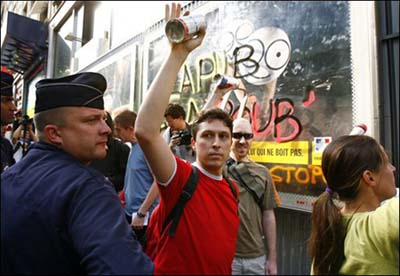

| |
Site dédié à la publication d'informations communiquées par le Collectif des déboulonneurs. En aucun cas ce site n'appelle à des actions illégales. | |
 |
||
|
Accueil du site > Paris > Compte-rendu barbouillage parisien du 23 juin 2006
Le huitième barbouillage mensuel (action de désobéissance civile en légitime réponse) et le rendez-vous avaient été annoncés la veille par le journal 20 Minutes, le jour même par Libération (la une, plus une pleine page) et Métro (Paris), ainsi que par la radio Ici et maintenant. Vers 17 heures, deux militants constatent que les huit panneaux déroulants Avenir (propriété de JCDecaux) visés, à l’angle des Champs-Élysées et de la rue de Berri, fonctionnent normalement : trois affiches (deux marques commerciales et une campagne sur la Sécurité routière). À 18 heures, une petite centaine de personnes se retrouvent au lieu du rendez-vous, à l’angle des Champs-Élysées et de la rue La Boétie. Sept fourgons de la police les attendaient, le long du trottoir. Photographes et journalistes sont présents (AFP, AFP vidéo, France 3…). À 18 h 10, deux des fondateurs du Collectif des déboulonneurs s’adressent au public du haut de deux tabourets disposés côte à côte. L’un présente le pourquoi (revendication du format 50x70) et le comment du « travail politique, social, environnemental » qui va être exécuté, avant de lire, nom de rue oblige, quelques lignes du Discours de la Servitude volontaire de La Boétie. Il cite aussi quelques personnalités favorables au procédé du barbouillage antipublicitaire : Alain Finkielkraut (philosophe), Edgar Morin (sociologue), Hubert Reeves (astrophysicien), Michel Serres (philosophe). L’autre membre du collectif enchaîne en accueillant la police comme il se doit et rappelant les manifestants au respect des forces de l’ordre. On entonne « Le Barbouilleur » sur l’air du « Déserteur » de Boris Vian. Vers 18 h 20, juste avant que le groupe ne quitte l’angle de la rue La Boétie pour gagner l’angle de la rue de Berri, les policiers font savoir qu’ils ne s’opposeront pas au barbouillage et n’arrêteront les barbouilleurs qu’ensuite. Incidemment, quatre policiers en civil ont avoué à un autre fondateur du Collectif qu’ils approuvaient les actions de ce dernier. Vers 18 h 30, une fois parcourus les cent et quelques mètres qui séparent les manifestants du lieu de l’action, on découvre avec stupéfaction que les huit panneaux déroulants ne défilent plus : ils sont immobilisés sur l’affiche de la Sécurité routière. Comme par hasard ! Sûrement le fait des employés de JCDecaux, dont la camionnette a été vue à proximité. Sans doute l’afficheur a-t-il voulu, par ce procédé mesquin, tenter de discréditer l’action des barbouilleurs. Cinq panneaux sur huit sont barbouillés devant caméras et appareils photo, et sous la bonne garde des policiers bienveillants, lesquels finissent toutefois par trépigner d’impatience d’entrer en action… Après avoir laissé les barbouilleurs terminer leurs inscriptions aussi esthétiques ou poétiques que subversives, ils les interpellent. Les militants brandissent leurs cartes d’identité en signe de coopération avec les forces de l’ordre : dix antipublicitaires sont embarqués dans un même fourgon, sous les applaudissements de la foule. Vers 18 h 50, le convoi démarre pour remonter les Champs-Élysées. Sirènes et gyrophares. Après un passage par la place de l’Étoile, les dix barbouilleurs sont emmenés au commissariat de la rue du faubourg Saint-Honoré (8e arrondissement). Cinq d’entre eux seront interrogés sur place, tandis que les cinq autres seront transférés au commissariat de la rue de la Faisanderie (16e arrondissement) : les policiers avouent, en effet, être pressés d’en finir avec ces « bienfaiteurs », car ils brûlent de rejoindre leurs fauteuils de téléspectateurs pour regarder des hommes-sandwichs taper du pied dans un ballon sur une pelouse entourée de panneaux publicitaires. 
photo AFP
Les barbouilleurs sont relâchés vers 20 h 30, heure à laquelle les passants peuvent encore profiter des inscriptions sur les panneaux des Champs-Élysées, pas encore « débarbouillés » par les employés de l’afficheur. L’AFP publie une dépêche moins d’une heure après (ici en ligne). Le lendemain, l’action est évoquée par les radios France-Info et RTL ; par la chaîne BFM TV ( la vidéo ici ) ; par le journal Le Parisien. Revue de presse en ligne : D’autres photos dans notre galerie |
|
Site utilisant SPIP - Hébergement Ouvaton
|